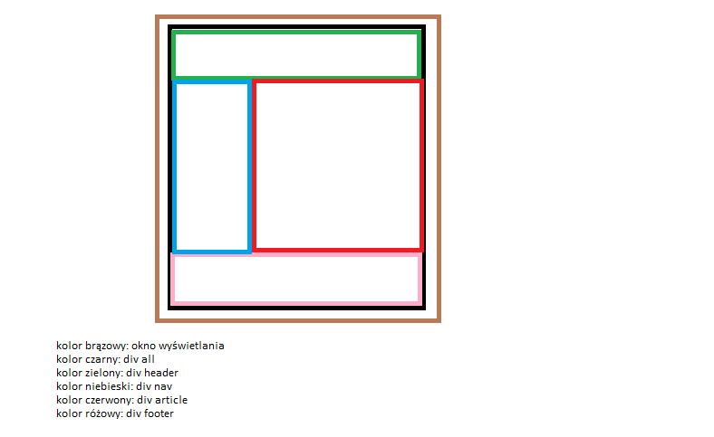
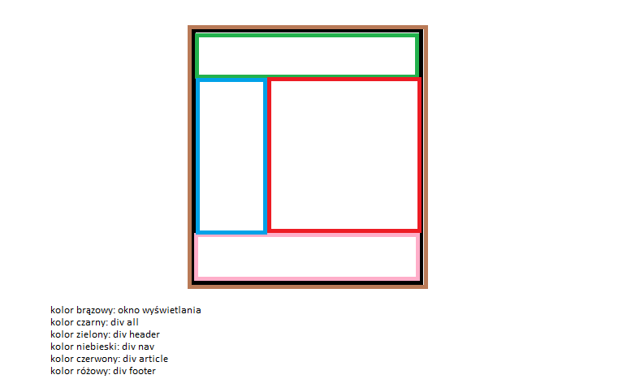

Czym jest responsywność?
Responsywność w html polega na dostosowywaniu się do rozmiaru okna przeglądarki, na którym wyświetlana jest ta strona. Dzięki temu strona adaptuje się do zaistniałych warunków, co wpływa na konfort przy przeglądaniu stron.Dostosowanie szerokości strony do okna wyświetlania
Podstawową komendą jaką trzeba napisać przy tworzeniu responsywnej strony, jest:"meta name="viewport" content="width=device-width, initial-scale=1",
którą należy napisać w headerze.
Co oznaczają poszczególne fragmenty kodu? Otóż meta-stag "vievport" odpowiada za domyśle ustawienia wymiarów i skalowania strony. "device-width" sprawia, że szerokoć strony definiuje szerokosć okna przegladarki. "initrial-scale"1" ustawia zaś domyślne skalowanie strony na x1.
Inną, również ważną zasadą jest to, aby rozmiar poszczególnych divów, tabel itp. zapisywać za pomocą procentów, zaś zapisywanie za pomocą pikselów powinno byc stosowane tylko w ostateczności.
@media- co to jest?
Kolejnym ważną komendą używaną w responsywnych stronach jest "@media", którą umieszcza się w sekcji "style" lub zewnętrznym pliku CSS. Określa ona, jak ma wyglądać strona po spełnieniu określonych warunków, np. wielkości (coś jak if w m.in C++)@media- zmienianie wielkosci divów
Ta strona ma obecnie następujacy layout:
Div all zajmuje 90% okna przeglądarki
Chcemy, żeby przy mniejszych wiekosciach (dajmy, że po 800px) layout wyglądał tak:

Aby to zrobić, trzeba wpisać następującą komendę w sekcji style lub zewnętrznym pliku CSS:
"@media screen and (max-width: 800px) {
#all{width:100%}}